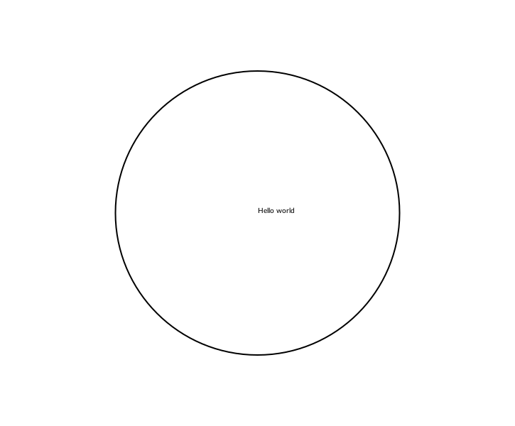
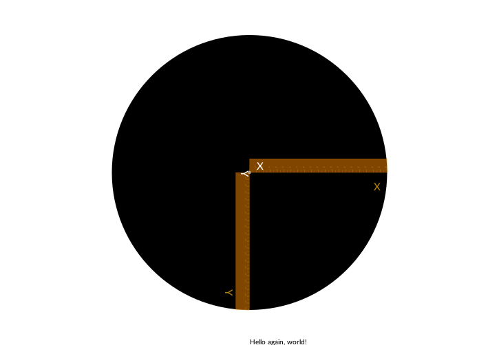

Hello World
If you're familiar with the basics of Cairo, PostScript, Processing, or similar graphics applications, you can probably glance at these tutorials, then move on to the How To sections.
What you need
If you've already downloaded Julia, and have added the Luxor package successfully (using ] add Luxor):
$ julia
_
_ _ _(_)_ | Documentation: https://docs.julialang.org
(_) | (_) (_) |
_ _ _| |_ __ _ | Type "?" for help, "]?" for Pkg help.
| | | | | | |/ _` | |
| | |_| | | | (_| | | Version 1.9.0-beta2 (2022-12-29)
_/ |\__'_|_|_|\__'_| | Official https://julialang.org/ release
|__/ |
(@v1.9) pkg> add Luxorthen you're ready to start.
You can work in a Jupyter or Pluto notebook, or use the VSCode editor/development environment. It's also possible to work in a text editor (make sure you know how to run a file of Julia code), or, at a pinch, you could use the Julia REPL directly.
Ready? Let's begin.
First steps
We'll have to load just one package for this tutorial:
using LuxorHere's an easy shortcut for making drawings in Luxor. It's a Julia macro, and it's a good way to test that your system's working. Evaluate this code:
@png begin
text("Hello world")
circle(Point(0, 0), 200, action = :stroke)
endWhat happened? Can you see this image somewhere?

If you're using VS-Code, the image should appear in the Plots window. If you're working in a Jupyter or Pluto notebook, the image should appear below or above the code. If you're using Julia in a terminal or text editor, the image should have opened up in some other application, or, at the very least, it should have been saved in your current working directory (as luxor-drawing-(time stamp).png). If nothing happened, or if something bad happened, we've got some set-up or installation issues probably unrelated to Luxor...
In this example we've used a macro, @png. This macro is an easy way to make a drawing, because it saves a lot of typing. (The macro expands to enclose your drawing commands with calls to the Drawing(), origin, finish, and preview functions.) There are also @svg and @pdf macros, which do a similar thing.
PNGs and SVGs are good because they show up in VS-Code, Jupyter, and Pluto. SVGs are usually higher quality too, but they're text-based so can become very large and difficult to load if the image is complex. PDF documents are always higher quality, and usually open up in a separate application.
This example illustrates a few things about Luxor drawings:
There are default values which you don't have to set if you don't want to (file names, colors, font sizes, and so on).
Positions on the drawing are specified with x and y coordinates stored in the Point type, and you can sometimes omit positions altogether.
the origin (0, 0) is at the centre of the drawing
by default, the text is placed at the origin, and by default it's left aligned
The circle wasn't filled, but
stroked. We passed the:strokesymbol as an action to thecirclefunction. Many drawing functions expect some action, such as:fillor:stroke, and sometimes:clipor:fillstroke. This works either as an argument (:fill) or as a keyword argument (action=:fill).Did the first drawing takes a few seconds to appear? The drawing engine takes a little time to warm up. Once it's running, drawings appear much faster.
Once more, with more black, and some rulers:
@png begin
text("Hello again, world!", Point(0, 250))
circle(Point(0, 0), 200, action = :fill)
rulers()
end
The x-coordinates usually run from left to right, the y-coordinates from top to bottom. So here, Point(0, 250) is a point at the left/right center, but at the bottom of the drawing.
The rulers() function draws CAD-style x and y rulers at the origin.